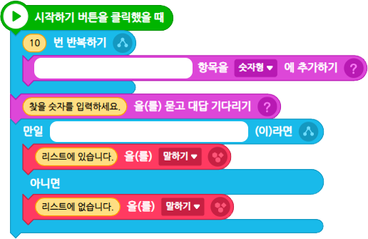

다음 조건을 참고하여 프로그램을 작성해 보자.
조건
(1)‘숫자형’ 리스트를 만들고 1부터 20까지의 숫자 중 무작위로 10개의 숫자를 저장한다.
(2)키보드로 숫자를 입력받고, 입력받은 숫자가 ‘숫자형’ 리스트에 있으면 ‘리스트에 있습니다.’를, 아니면 ‘리스트에 없습니다.'를 출력한다.
아래 블록을 참고하여 프로그램을 작성해 보자.

화면의 크기를 좌우로 조절하면 블록을 크게 볼 수 있어요.
이전
다음